Zeta functions¶
This section includes the Riemann zeta functions and associated functions pertaining to analytic number theory.
Contents
- Zeta functions
- Riemann zeta function (zeta(), altzeta())
- Zeta function zeros (zetazero())
- Riemann-Siegel functions (siegelz(), siegeltheta(), grampoint())
- Prime counting function (primepi(), primepi2(), riemannr())
- Bernoulli numbers and polynomials (bernoulli(), bernfrac(), bernpoly())
- Polylogarithms (polylog())
- Stieltjes constants (stieltjes())
- Bell numbers and polynomials (bell(), polyexp())
- Other zeta functions (primezeta())
Riemann zeta function (zeta(), altzeta())¶
- mpmath.functions.zeta(s)¶
zeta(s) computes the Riemann zeta function,
 .
The Riemann zeta function is defined for
.
The Riemann zeta function is defined for  by
by
and for 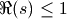 by analytic continuation. It has a pole at
 .
.Examples
Some exact values of the zeta function are:
>>> from mpmath import * >>> mp.dps = 15 >>> print zeta(2) 1.64493406684823 >>> print pi**2 / 6 1.64493406684823 >>> print zeta(0) -0.5 >>> print zeta(-1) -0.0833333333333333 >>> print zeta(-2) 0.0
zeta() supports arbitrary precision evaluation and complex arguments:
>>> mp.dps = 50 >>> print zeta(pi) 1.1762417383825827588721504519380520911697389900217 >>> print zeta(1+2j) # doctest: +NORMALIZE_WHITESPACE (0.5981655697623817367034568491742186771747764868876 - 0.35185474521784529049653859679690026505229177886045j)
The Riemann zeta function has so-called nontrivial zeros on the critical line
 :
:>>> mp.dps = 15 >>> print findroot(zeta, 0.5+14j) (0.5 + 14.1347251417347j) >>> print findroot(zeta, 0.5+21j) (0.5 + 21.0220396387716j) >>> print findroot(zeta, 0.5+25j) (0.5 + 25.0108575801457j)
For investigation of the zeta function zeros, the Riemann-Siegel Z-function is often more convenient than working with the Riemann zeta function directly (see siegelz()).
For large positive
 , rapidly approaches 1:
, rapidly approaches 1:>>> print zeta(30) 1.00000000093133 >>> print zeta(100) 1.0 >>> print zeta(inf) 1.0
The following series converges and in fact has a simple closed form value:
>>> print nsum(lambda k: zeta(k)-1, [2, inf]) 1.0
Algorithm
The primary algorithm is Borwein’s algorithm for the Dirichlet eta function. Three separate implementations are used: for general real arguments, general complex arguments, and for integers. The reflection formula is applied to arguments in the negative half-plane. For very large real arguments, either direct summation or the Euler prime product is used.
It should be noted that computation of
gets very slow
when is far away from the real axis.References
- mpmath.functions.altzeta(s)¶
Computes the Dirichlet eta function,
 , also known as the
alternating zeta function. This function is defined in analogy
with the Riemann zeta function as providing the sum of the
alternating series
, also known as the
alternating zeta function. This function is defined in analogy
with the Riemann zeta function as providing the sum of the
alternating series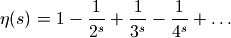
Note that
 is the alternating harmonic series.
The eta function unlike the Riemann zeta function is an entire
function, having a finite value for all complex .
is the alternating harmonic series.
The eta function unlike the Riemann zeta function is an entire
function, having a finite value for all complex .The alternating and non-alternating zeta functions are related via the simple formula
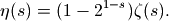
This formula can be used to define
for 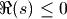,
where the series diverges.Examples
Some special values are:
>>> from mpmath import * >>> mp.dps = 15 >>> print altzeta(1) 0.693147180559945 >>> print altzeta(0) 0.5 >>> print altzeta(-1) 0.25 >>> print altzeta(-2) 0.0
An example of a sum that can be computed more accurately and efficiently via altzeta() than via numerical summation:
>>> sum(-(-1)**n / n**2.5 for n in range(1, 100)) 0.86720495150398402 >>> print altzeta(2.5) 0.867199889012184
At positive even integers, the Dirichlet eta function evaluates to a rational multiple of a power of
 :
:>>> print altzeta(2) 0.822467033424113 >>> print pi**2/12 0.822467033424113
Like the Riemann zeta function,
, approaches 1
as approaches positive infinity, although it does
so from below rather than from above:>>> print altzeta(30) 0.999999999068682 >>> print altzeta(inf) 1.0 >>> altzeta(1000, rounding='d') mpf('0.99999999999999989') >>> altzeta(1000, rounding='u') mpf('1.0')
References
Zeta function zeros (zetazero())¶
- mpmath.functions.zetazero(n, url='http://www.dtc.umn.edu/~odlyzko/zeta_tables/zeros1')¶
Returns the
 -th nontrivial zero of the Riemann zeta function.
The zero is computed using findroot(), using a table lookup
for the initial point.
-th nontrivial zero of the Riemann zeta function.
The zero is computed using findroot(), using a table lookup
for the initial point.The zeros are located on the critical line with real part 1/2:
>>> from mpmath import * >>> mp.dps = 25 >>> print zetazero(1) (0.5 + 14.13472514173469379045725j) >>> print zetazero(2) (0.5 + 21.02203963877155499262848j) >>> print zetazero(20) (0.5 + 77.14484006887480537268266j)
Negative indices give the conjugate zeros (
 is undefined):
is undefined):>>> print zetazero(-1) (0.5 - 14.13472514173469379045725j)
The default table only provides
up to 100. For larger up to
100,000, zetazero() will automatically download a table
(1.8 MB) from the website of Andrew Odlyzko [1]. This requires a
fast connection to the internet. Alternatively, you can supply the
url to a custom table. The table should be a file listing the
imaginary parts as float literals, separated by line breaks.
Riemann-Siegel functions (siegelz(), siegeltheta(), grampoint())¶
- mpmath.functions.siegelz(t)¶
Computes the Z-function, also known as the Riemann-Siegel Z function,

where
is the Riemann zeta function (zeta())
and where  denotes the Riemann-Siegel theta function
(see siegeltheta()).
denotes the Riemann-Siegel theta function
(see siegeltheta()).Evaluation is supported for real and complex arguments:
>>> from mpmath import * >>> mp.dps = 25 >>> print siegelz(1) -0.7363054628673177346778998 >>> print siegelz(3+4j) (-0.1852895764366314976003936 - 0.2773099198055652246992479j)
The Z-function has a Maclaurin expansion:
>>> nprint(chop(taylor(siegelz, 0, 4))) [-1.46035, 0.0, 2.73588, 0.0, -8.39357]
The Z-function
 is equal to
is equal to  on the
critical line
on the
critical line  (i.e. for real arguments
(i.e. for real arguments  to
to  ). Its zeros coincide with those of the Riemann zeta
function:
). Its zeros coincide with those of the Riemann zeta
function:>>> print findroot(siegelz, 14) 14.13472514173469379045725 >>> print findroot(siegelz, 20) 21.02203963877155499262848 >>> print findroot(zeta, 0.5+14j) (0.5 + 14.13472514173469379045725j) >>> print findroot(zeta, 0.5+20j) (0.5 + 21.02203963877155499262848j)
Since the Z-function is real-valued on the critical line (and unlike
 analytic), it is useful for
investigating the zeros of the Riemann zeta function.
For example, one can use a root-finding algorithm based
on sign changes:
analytic), it is useful for
investigating the zeros of the Riemann zeta function.
For example, one can use a root-finding algorithm based
on sign changes:>>> print findroot(siegelz, [100, 200], solver='bisect') 176.4414342977104188888926
To locate roots, Gram points
 which can be computed
by grampoint() are useful. If
which can be computed
by grampoint() are useful. If  is
positive for two consecutive , then must have
a zero between those points:
is
positive for two consecutive , then must have
a zero between those points:>>> g10 = grampoint(10) >>> g11 = grampoint(11) >>> (-1)**10 * siegelz(g10) > 0 True >>> (-1)**11 * siegelz(g11) > 0 True >>> print findroot(siegelz, [g10, g11], solver='bisect') 56.44624769706339480436776 >>> print g10, g11 54.67523744685325626632663 57.54516517954725443703014
- mpmath.functions.siegeltheta(t)¶
Computes the Riemann-Siegel theta function,

The Riemann-Siegel theta function is important in providing the phase factor for the Z-function (see siegelz()). Evaluation is supported for real and complex arguments:
>>> from mpmath import * >>> mp.dps = 25 >>> print siegeltheta(0) 0.0 >>> print siegeltheta(inf) +inf >>> print siegeltheta(-inf) -inf >>> print siegeltheta(1) -1.767547952812290388302216 >>> print siegeltheta(10+0.25j) (-3.068638039426838572528867 + 0.05804937947429712998395177j)
The Riemann-Siegel theta function has odd symmetry around
 ,
two local extreme points and three real roots including 0 (located
symmetrically):
,
two local extreme points and three real roots including 0 (located
symmetrically):>>> nprint(chop(taylor(siegeltheta, 0, 5))) [0.0, -2.68609, 0.0, 2.69433, 0.0, -6.40218] >>> print findroot(diffun(siegeltheta), 7) 6.28983598883690277966509 >>> print findroot(siegeltheta, 20) 17.84559954041086081682634
For large
, there is a famous asymptotic formula
for , to first order given by:>>> t = mpf(10**6) >>> print siegeltheta(t) 5488816.353078403444882823 >>> print -t*log(2*pi/t)/2-t/2 5488816.745777464310273645
- mpmath.functions.grampoint(n)¶
Gives the
-th Gram point , defined as the solution
to the equation  where
is the Riemann-Siegel theta function (siegeltheta()).
where
is the Riemann-Siegel theta function (siegeltheta()).The first few Gram points are:
>>> from mpmath import * >>> mp.dps = 25 >>> print grampoint(0) 17.84559954041086081682634 >>> print grampoint(1) 23.17028270124630927899664 >>> print grampoint(2) 27.67018221781633796093849 >>> print grampoint(3) 31.71797995476405317955149
Checking the definition:
>>> print siegeltheta(grampoint(3)) 9.42477796076937971538793 >>> print 3*pi 9.42477796076937971538793
A large Gram point:
>>> print grampoint(10**10) 3293531632.728335454561153
Gram points are useful when studying the Z-function (siegelz()). See the documentation of that function for additional examples.
grampoint() can solve the defining equation for nonintegral
. There is a fixed point where  :
:>>> print findroot(lambda x: grampoint(x) - x, 10000) 9146.698193171459265866198
References
Prime counting function (primepi(), primepi2(), riemannr())¶
- mpmath.functions.primepi(x)¶
Evaluates the prime counting function, 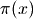, which gives the number of primes less than or equal to
 . The argument
may be fractional.
. The argument
may be fractional.The prime counting function is very expensive to evaluate precisely for large
, and the present implementation is
not optimized in any way. For numerical approximation of the
prime counting function, it is better to use primepi2()
or riemannr().Some values of the prime counting function:
>>> from mpmath import * >>> [primepi(k) for k in range(20)] [0, 0, 1, 2, 2, 3, 3, 4, 4, 4, 4, 5, 5, 6, 6, 6, 6, 7, 7, 8] >>> primepi(3.5) 2 >>> primepi(100000) 9592
- mpmath.functions.primepi2(x)¶
Returns an interval (as an mpi instance) providing bounds for the value of the prime counting function . For small
, primepi2() returns an exact interval based on
the output of primepi(). For 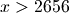, a loose interval
based on Schoenfeld’s inequality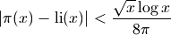
is returned. This estimate is rigorous assuming the truth of the Riemann hypothesis, and can be computed very quickly.
Examples
Exact values of the prime counting function for small
:>>> from mpmath import * >>> mp.dps = 15 >>> print primepi2(10) [4.0, 4.0] >>> print primepi2(100) [25.0, 25.0] >>> print primepi2(1000) [168.0, 168.0]
Loose intervals are generated for moderately large
:>>> print primepi2(10000), primepi(10000) [1209.0, 1283.0] 1229 >>> print primepi2(50000), primepi(50000) [5070.0, 5263.0] 5133
As
increases, the absolute error gets worse while the relative
error improves. The exact value of 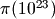 is
1925320391606803968923, and primepi2() gives 9 significant
digits:>>> p = primepi2(10**23) >>> print p [1.9253203909477020467e+21, 1.925320392280406229e+21] >>> print p.delta / p.a 6.9219865355293e-10
A more precise, nonrigorous estimate for can be obtained using the Riemann R function (riemannr()). For large enough
, the value returned by primepi2()
essentially amounts to a small perturbation of the value returned by
riemannr():>>> print primepi2(10**100) [4.3619719871407024816e+97, 4.3619719871407032404e+97] >>> print riemannr(10**100) 4.3619719871407e+97
- mpmath.functions.riemannr(x)¶
Evaluates the Riemann R function, a smooth approximation of the prime counting function (see primepi()). The Riemann R function gives a fast numerical approximation useful e.g. to roughly estimate the number of primes in a given interval.
The Riemann R function is computed using the rapidly convergent Gram series,
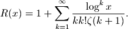
From the Gram series, one sees that the Riemann R function is a well-defined analytic function (except for a branch cut along the negative real half-axis); it can be evaluated for arbitrary real or complex arguments.
The Riemann R function gives a very accurate approximation of the prime counting function. For example, it is wrong by at most 2 for 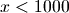, and for 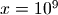 differs from the exact value of by 79, or less than two parts in a million. It is about 10 times more accurate than the logarithmic integral estimate (see li()), which however is even faster to evaluate. It is orders of magnitude more accurate than the extremely fast 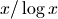 estimate.
Examples
For small arguments, the Riemann R function almost exactly gives the prime counting function if rounded to the nearest integer:
>>> from mpmath import * >>> mp.dps = 15 >>> print primepi(50), riemannr(50) 15 14.9757023241462 >>> max(abs(primepi(n)-round(riemannr(n))) for n in range(100)) 1.0 >>> max(abs(primepi(n)-round(riemannr(n))) for n in range(300)) 2.0
The Riemann R function can be evaluated for arguments far too large for exact determination of to be computationally feasible with any presently known algorithm:
>>> print riemannr(10**30) 1.46923988977204e+28 >>> print riemannr(10**100) 4.3619719871407e+97 >>> print riemannr(10**1000) 4.3448325764012e+996
A comparison of the Riemann R function and logarithmic integral estimates for using exact values of 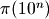 up to 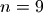. The fractional error is shown in parentheses:
>>> exact = [4,25,168,1229,9592,78498,664579,5761455,50847534] >>> for n, p in enumerate(exact): ... n += 1 ... r, l = riemannr(10**n), li(10**n) ... rerr, lerr = nstr((r-p)/p,3), nstr((l-p)/p,3) ... print "%i %i %s(%s) %s(%s)" % (n, p, r, rerr, l, lerr) ... 1 4 4.56458314100509(1.41e-1) 6.1655995047873(5.41e-1) 2 25 25.6616332669242(2.65e-2) 30.1261415840796(2.05e-1) 3 168 168.359446281167(2.14e-3) 177.609657990152(5.72e-2) 4 1229 1226.93121834343(-1.68e-3) 1246.13721589939(1.39e-2) 5 9592 9587.43173884197(-4.76e-4) 9629.8090010508(3.94e-3) 6 78498 78527.3994291277(3.75e-4) 78627.5491594622(1.65e-3) 7 664579 664667.447564748(1.33e-4) 664918.405048569(5.11e-4) 8 5761455 5761551.86732017(1.68e-5) 5762209.37544803(1.31e-4) 9 50847534 50847455.4277214(-1.55e-6) 50849234.9570018(3.35e-5)
The derivative of the Riemann R function gives the approximate probability for a number of magnitude
to be prime:>>> print diff(riemannr, 1000) 0.141903028110784 >>> print (primepi(1050) - primepi(950)) / 100. 0.15
Evaluation is supported for arbitrary arguments and at arbitrary precision:
>>> mp.dps = 30 >>> print riemannr(7.5) 3.72934743264966261918857135136 >>> print riemannr(-4+2j) (-0.551002208155486427591793957644 + 2.16966398138119450043195899746j)
Bernoulli numbers and polynomials (bernoulli(), bernfrac(), bernpoly())¶
- mpmath.functions.bernoulli(n)¶
Computes the nth Bernoulli number, 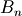, for any integer 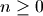.
The Bernoulli numbers are rational numbers, but this function returns a floating-point approximation. To obtain an exact fraction, use bernfrac() instead.
Examples
Numerical values of the first few Bernoulli numbers:
>>> from mpmath import * >>> mp.dps = 15 >>> for n in range(15): ... print n, bernoulli(n) ... 0 1.0 1 -0.5 2 0.166666666666667 3 0.0 4 -0.0333333333333333 5 0.0 6 0.0238095238095238 7 0.0 8 -0.0333333333333333 9 0.0 10 0.0757575757575758 11 0.0 12 -0.253113553113553 13 0.0 14 1.16666666666667
Bernoulli numbers can be approximated with arbitrary precision:
>>> mp.dps = 50 >>> print bernoulli(100) -2.8382249570693706959264156336481764738284680928013e+78
Arbitrarily large
are supported:>>> mp.dps = 15 >>> print bernoulli(10**20 + 2) 3.09136296657021e+1876752564973863312327
The Bernoulli numbers are related to the Riemann zeta function at integer arguments:
>>> print -bernoulli(8) * (2*pi)**8 / (2*fac(8)) 1.00407735619794 >>> print zeta(8) 1.00407735619794
Algorithm
For small
( ) bernoulli() uses a recurrence
formula due to Ramanujan. All results in this range are cached,
so sequential computation of small Bernoulli numbers is
guaranteed to be fast.
) bernoulli() uses a recurrence
formula due to Ramanujan. All results in this range are cached,
so sequential computation of small Bernoulli numbers is
guaranteed to be fast.For larger
, is evaluated in terms of the Riemann zeta
function.
- mpmath.functions.bernfrac(n)¶
Returns a tuple of integers
 such that 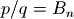 exactly,
where denotes the -th Bernoulli number. The fraction is
always reduced to lowest terms. Note that for 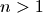 and odd,
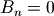, and 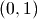 is returned.
such that 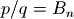 exactly,
where denotes the -th Bernoulli number. The fraction is
always reduced to lowest terms. Note that for 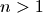 and odd,
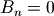, and 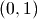 is returned.Examples
The first few Bernoulli numbers are exactly:
>>> from mpmath import * >>> for n in range(15): ... p, q = bernfrac(n) ... print n, "%s/%s" % (p, q) ... 0 1/1 1 -1/2 2 1/6 3 0/1 4 -1/30 5 0/1 6 1/42 7 0/1 8 -1/30 9 0/1 10 5/66 11 0/1 12 -691/2730 13 0/1 14 7/6
This function works for arbitrarily large
:>>> p, q = bernfrac(10**4) >>> print q 2338224387510 >>> print len(str(p)) 27692 >>> mp.dps = 15 >>> print mpf(p) / q -9.04942396360948e+27677 >>> print bernoulli(10**4) -9.04942396360948e+27677
Note: bernoulli() computes a floating-point approximation directly, without computing the exact fraction first. This is much faster for large
.Algorithm
bernfrac() works by computing the value of numerically and then using the von Staudt-Clausen theorem [1] to reconstruct the exact fraction. For large
, this is significantly faster than
computing 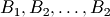 recursively with exact arithmetic.
The implementation has been tested for 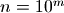 up to 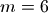.In practice, bernfrac() appears to be about three times slower than the specialized program calcbn.exe [2]
References
- MathWorld, von Staudt-Clausen Theorem: http://mathworld.wolfram.com/vonStaudt-ClausenTheorem.html
- The Bernoulli Number Page: http://www.bernoulli.org/
- mpmath.functions.bernpoly(n, z)¶
Evaluates the Bernoulli polynomial 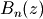.
The first few Bernoulli polynomials are:
>>> from mpmath import * >>> mp.dps = 15 >>> for n in range(6): ... nprint(chop(taylor(lambda x: bernpoly(n,x), 0, n))) ... [1.0] [-0.5, 1.0] [0.166667, -1.0, 1.0] [0.0, 0.5, -1.5, 1.0] [-3.33333e-2, 0.0, 1.0, -2.0, 1.0] [0.0, -0.166667, 0.0, 1.66667, -2.5, 1.0]
At
 , the Bernoulli polynomial evaluates to a
Bernoulli number (see bernoulli()):
, the Bernoulli polynomial evaluates to a
Bernoulli number (see bernoulli()):>>> print bernpoly(12, 0), bernoulli(12) -0.253113553113553 -0.253113553113553 >>> print bernpoly(13, 0), bernoulli(13) 0.0 0.0
Polylogarithms (polylog())¶
- mpmath.functions.polylog(s, z)¶
Computes the polylogarithm, defined by the sum

This series is convergent only for
 , so elsewhere
the analytic continuation is implied.
, so elsewhere
the analytic continuation is implied.The polylogarithm should not be confused with the logarithmic integral (also denoted by Li or li), which is implemented as li().
Examples
The polylogarithm satisfies a huge number of functional identities. A sample of polylogarithm evaluations is shown below:
>>> from mpmath import * >>> mp.dps = 15 >>> print polylog(1,0.5), log(2) 0.693147180559945 0.693147180559945 >>> print polylog(2,0.5), (pi**2-6*log(2)**2)/12 0.582240526465012 0.582240526465012 >>> print polylog(2,-phi), -log(phi)**2-pi**2/10 -1.21852526068613 -1.21852526068613 >>> print polylog(3,0.5), 7*zeta(3)/8-pi**2*log(2)/12+log(2)**3/6 0.53721319360804 0.53721319360804
polylog() can evaluate the analytic continuation of the polylogarithm when
is an integer:>>> print polylog(2, 10) (0.536301287357863 - 7.23378441241546j) >>> print polylog(2, -10) -4.1982778868581 >>> print polylog(2, 10j) (-3.05968879432873 + 3.71678149306807j) >>> print polylog(-2, 10) -0.150891632373114 >>> print polylog(-2, -10) 0.067618332081142 >>> print polylog(-2, 10j) (0.0384353698579347 + 0.0912451798066779j)
Some more examples, with arguments on the unit circle (note that the series definition cannot be used for computation here):
>>> print polylog(2,j) (-0.205616758356028 + 0.915965594177219j) >>> print j*catalan-pi**2/48 (-0.205616758356028 + 0.915965594177219j) >>> print polylog(3,exp(2*pi*j/3)) (-0.534247512515375 + 0.765587078525922j) >>> print -4*zeta(3)/9 + 2*j*pi**3/81 (-0.534247512515375 + 0.765587078525921j)
Polylogarithms of different order are related by integration and differentiation:
>>> s, z = 3, 0.5 >>> print polylog(s+1, z) 0.517479061673899 >>> print quad(lambda t: polylog(s,t)/t, [0, z]) 0.517479061673899 >>> print z*diff(lambda t: polylog(s+2,t), z) 0.517479061673899
Taylor series expansions around
are:>>> for n in range(-3, 4): ... nprint(taylor(lambda x: polylog(n,x), 0, 5)) ... [0.0, 1.0, 8.0, 27.0, 64.0, 125.0] [0.0, 1.0, 4.0, 9.0, 16.0, 25.0] [0.0, 1.0, 2.0, 3.0, 4.0, 5.0] [0.0, 1.0, 1.0, 1.0, 1.0, 1.0] [0.0, 1.0, 0.5, 0.333333, 0.25, 0.2] [0.0, 1.0, 0.25, 0.111111, 6.25e-2, 4.0e-2] [0.0, 1.0, 0.125, 3.7037e-2, 1.5625e-2, 8.0e-3]
The series defining the polylogarithm is simultaneously a Taylor series and an L-series. For certain values of
 , the
polylogarithm reduces to a pure zeta function:
, the
polylogarithm reduces to a pure zeta function:>>> print polylog(pi, 1), zeta(pi) 1.17624173838258 1.17624173838258 >>> print polylog(pi, -1), -altzeta(pi) -0.909670702980385 -0.909670702980385
Evaluation for arbitrary, nonintegral
is supported
for within the unit circle:>>> print polylog(3+4j, 0.25) (0.24258605789446 - 0.00222938275488344j) >>> print nsum(lambda k: 0.25**k / k**(3+4j), [1,inf]) (0.24258605789446 - 0.00222938275488344j)
References
- Richard Crandall, “Note on fast polylogarithm computation” http://people.reed.edu/~crandall/papers/Polylog.pdf
- http://en.wikipedia.org/wiki/Polylogarithm
- http://mathworld.wolfram.com/Polylogarithm.html
Stieltjes constants (stieltjes())¶
- mpmath.functions.stieltjes(n, a=1)¶
For a nonnegative integer
, stieltjes(n) computes the
-th Stieltjes constant  , defined as the
-th coefficient in the Laurent series expansion of the
Riemann zeta function around the pole at . That is,
we have:
, defined as the
-th coefficient in the Laurent series expansion of the
Riemann zeta function around the pole at . That is,
we have:
More generally, stieltjes(n, a) gives the corresponding coefficient
 for the Hurwitz zeta function
for the Hurwitz zeta function
 (with
(with  ).
).Examples
The zeroth Stieltjes constant is just Euler’s constant
 :
:>>> from mpmath import * >>> mp.dps = 15 >>> print stieltjes(0) 0.577215664901533
Some more values are:
>>> print stieltjes(1) -0.0728158454836767 >>> print stieltjes(10) 0.000205332814909065 >>> print stieltjes(30) 0.00355772885557316 >>> print stieltjes(1000) -1.57095384420474e+486 >>> print stieltjes(2000) 2.680424678918e+1109 >>> print stieltjes(1, 2.5) -0.23747539175716
An alternative way to compute
 :
:>>> print diff(extradps(25)(lambda x: 1/(x-1) - zeta(x)), 1) -0.0728158454836767
stieltjes() supports arbitrary precision evaluation:
>>> mp.dps = 50 >>> print stieltjes(2) -0.0096903631928723184845303860352125293590658061013408
Algorithm
stieltjes() numerically evaluates the integral in the following representation due to Ainsworth, Howell and Coffey [1], [2]:

For some reference values with
 , see e.g. [4].
, see e.g. [4].References
- O. R. Ainsworth & L. W. Howell, “An integral representation of the generalized Euler-Mascheroni constants”, NASA Technical Paper 2456 (1985), http://ntrs.nasa.gov/archive/nasa/casi.ntrs.nasa.gov/19850014994_1985014994.pdf
- M. W. Coffey, “The Stieltjes constants, their relation to the
 coefficients, and representation of the Hurwitz
zeta function”, arXiv:0706.0343v1 http://arxiv.org/abs/0706.0343
coefficients, and representation of the Hurwitz
zeta function”, arXiv:0706.0343v1 http://arxiv.org/abs/0706.0343 - http://mathworld.wolfram.com/StieltjesConstants.html
- http://pi.lacim.uqam.ca/piDATA/stieltjesgamma.txt
Bell numbers and polynomials (bell(), polyexp())¶
- mpmath.functions.bell(n, x)¶
For
a nonnegative integer, bell(n,x) evaluates the Bell
polynomial  , the first few of which are
, the first few of which are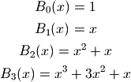
If
 or bell() is called with only one argument, it
gives the -th Bell number , which is the number of
partitions of a set with elements. By setting the precision to
at least 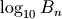 digits, bell() provides fast
calculation of exact Bell numbers.
or bell() is called with only one argument, it
gives the -th Bell number , which is the number of
partitions of a set with elements. By setting the precision to
at least 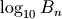 digits, bell() provides fast
calculation of exact Bell numbers.In general, bell() computes
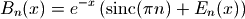
where 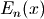 is the generalized exponential function implemented by polyexp(). This is an extension of Dobinski’s formula [1], where the modification is the sinc term ensuring that
is
continuous in ; bell() can thus be evaluated,
differentiated, etc for arbitrary complex arguments.Examples
Simple evaluations:
>>> from mpmath import * >>> mp.dps = 25 >>> print bell(0, 2.5) 1.0 >>> print bell(1, 2.5) 2.5 >>> print bell(2, 2.5) 8.75
Evaluation for arbitrary complex arguments:
>>> print bell(5.75+1j, 2-3j) (-10767.71345136587098445143 - 15449.55065599872579097221j)
The first few Bell polynomials:
>>> for k in range(7): ... nprint(taylor(lambda x: bell(k,x), 0, k)) ... [1.0] [0.0, 1.0] [0.0, 1.0, 1.0] [0.0, 1.0, 3.0, 1.0] [0.0, 1.0, 7.0, 6.0, 1.0] [0.0, 1.0, 15.0, 25.0, 10.0, 1.0] [0.0, 1.0, 31.0, 90.0, 65.0, 15.0, 1.0]
The first few Bell numbers and complementary Bell numbers:
>>> print [int(bell(k)) for k in range(10)] [1, 1, 2, 5, 15, 52, 203, 877, 4140, 21147] >>> print [int(bell(k,-1)) for k in range(10)] [1, -1, 0, 1, 1, -2, -9, -9, 50, 267]
Large Bell numbers:
>>> mp.dps = 50 >>> print bell(50) 185724268771078270438257767181908917499221852770.0 >>> print bell(50,-1) -29113173035759403920216141265491160286912.0
Some even larger values:
>>> mp.dps = 25 >>> print bell(1000,-1) -1.237132026969293954162816e+1869 >>> print bell(1000) 2.989901335682408421480422e+1927 >>> print bell(1000,2) 6.591553486811969380442171e+1987 >>> print bell(1000,100.5) 9.101014101401543575679639e+2529
A determinant identity satisfied by Bell numbers:
>>> mp.dps = 15 >>> N = 8 >>> print det([[bell(k+j) for j in range(N)] for k in range(N)]) 125411328000.0 >>> print superfac(N-1) 125411328000.0
References
- mpmath.functions.polyexp(s, z)¶
Evaluates the generalized exponential function (for arbitrary complex
, )
 is constructed from the exponential function analogously
to how the polylogarithm is constructed from the ordinary
logarithm; as a function of (with fixed),
is constructed from the exponential function analogously
to how the polylogarithm is constructed from the ordinary
logarithm; as a function of (with fixed),  is a
Dirichlet series. It is an entire function of both and .
is a
Dirichlet series. It is an entire function of both and .In terms of the Bell polynomials
(see bell()), we
have
Note that
and  are identical if
is a nonzero integer, but not otherwise. In particular, they differ
at .
are identical if
is a nonzero integer, but not otherwise. In particular, they differ
at .Examples
Evaluating a series:
>>> from mpmath import * >>> mp.dps = 25 >>> print nsum(lambda k: sqrt(k)/fac(k), [1,inf]) 2.101755547733791780315904 >>> print polyexp(0.5,1) 2.101755547733791780315904
Evaluation for arbitrary arguments:
>>> print polyexp(-3-4j, 2.5+2j) (2.351660261190434618268706 + 1.202966666673054671364215j)
Evaluation is accurate for tiny function values:
>>> print polyexp(4, -100) 3.499471750566824369520223e-36
If
is a nonpositive integer,  reduces to a special
instance of the hypergeometric function
reduces to a special
instance of the hypergeometric function  :
:>>> n = 3 >>> x = pi >>> print polyexp(-n,x) 4.042192318847986561771779 >>> print x*hyper([1]*(n+1), [2]*(n+1), x) 4.042192318847986561771779
Other zeta functions (primezeta())¶
- mpmath.functions.primezeta(s)¶
Computes the prime zeta function, which is defined in analogy with the Riemann zeta function (zeta()) as

where the sum is taken over all prime numbers
 . Although
this sum only converges for
. Although
this sum only converges for  , the
function is defined by analytic continuation in the
half-plane
, the
function is defined by analytic continuation in the
half-plane  .
.Examples
Arbitrary-precision evaluation for real and complex arguments is supported:
>>> from mpmath import * >>> mp.dps = 30 >>> print primezeta(2) 0.452247420041065498506543364832 >>> print primezeta(pi) 0.15483752698840284272036497397 >>> mp.dps = 50 >>> print primezeta(3) 0.17476263929944353642311331466570670097541212192615 >>> mp.dps = 20 >>> print primezeta(3+4j) (-0.12085382601645763295 - 0.013370403397787023602j)
The prime zeta function has a logarithmic pole at
,
with residue equal to the difference of the Mertens and
Euler constants:>>> print primezeta(1) +inf >>> print extradps(25)(lambda x: primezeta(1+x)+log(x))(+eps) -0.31571845205389007685 >>> print mertens-euler -0.31571845205389007685
The analytic continuation to
 is implemented. In this strip the function exhibits
very complex behavior; on the unit interval, it has poles at
is implemented. In this strip the function exhibits
very complex behavior; on the unit interval, it has poles at
 for every squarefree integer :
for every squarefree integer :>>> print primezeta(0.5) # Pole at s = 1/2 (-inf + 3.1415926535897932385j) >>> print primezeta(0.25) (-1.0416106801757269036 + 0.52359877559829887308j) >>> print primezeta(0.5+10j) (0.54892423556409790529 + 0.45626803423487934264j)
Although evaluation works in principle for any
,
it should be noted that the evaluation time increases exponentially
as approaches the imaginary axis.For large
 ,
,  is asymptotic to
is asymptotic to  :
:>>> print primezeta(inf) 0.0 >>> print primezeta(10), mpf(2)**-10 0.00099360357443698021786 0.0009765625 >>> print primezeta(1000) 9.3326361850321887899e-302 >>> print primezeta(1000+1000j) (-3.8565440833654995949e-302 - 8.4985390447553234305e-302j)
References
Carl-Erik Froberg, “On the prime zeta function”, BIT 8 (1968), pp. 187-202.